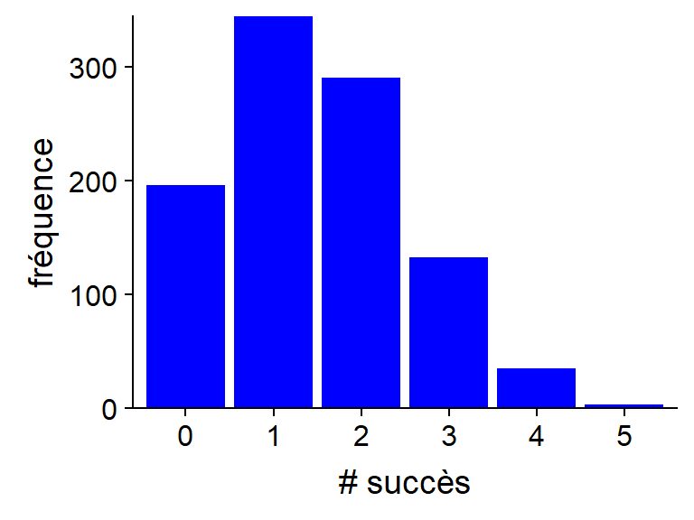
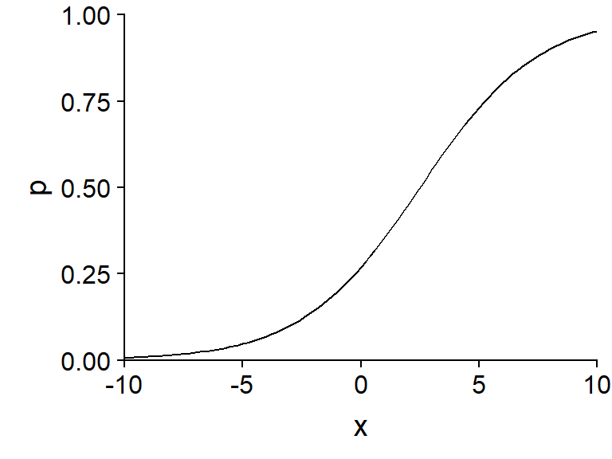
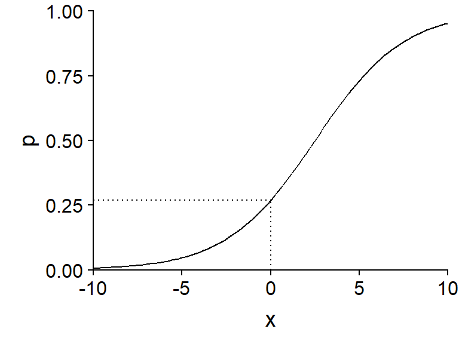
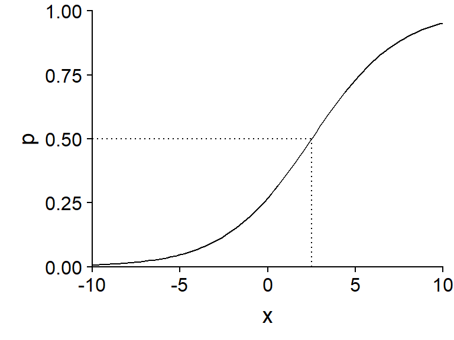
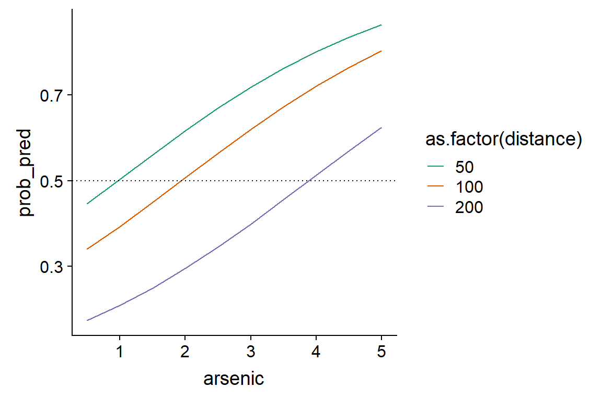
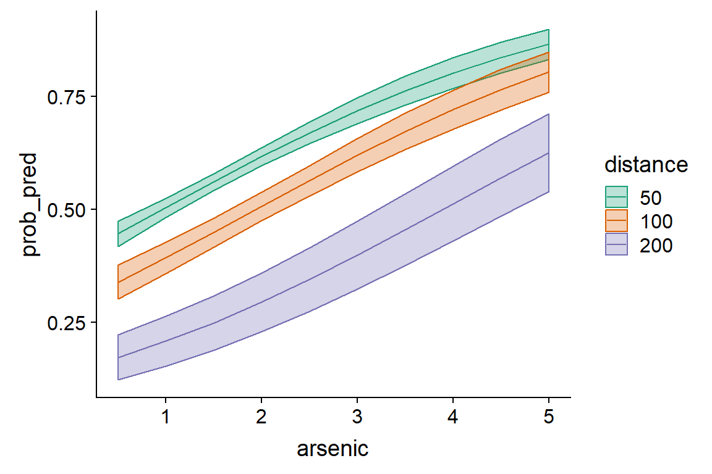
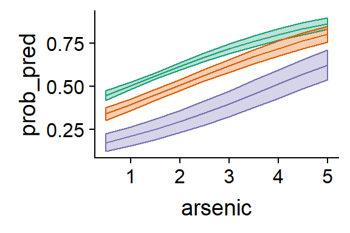
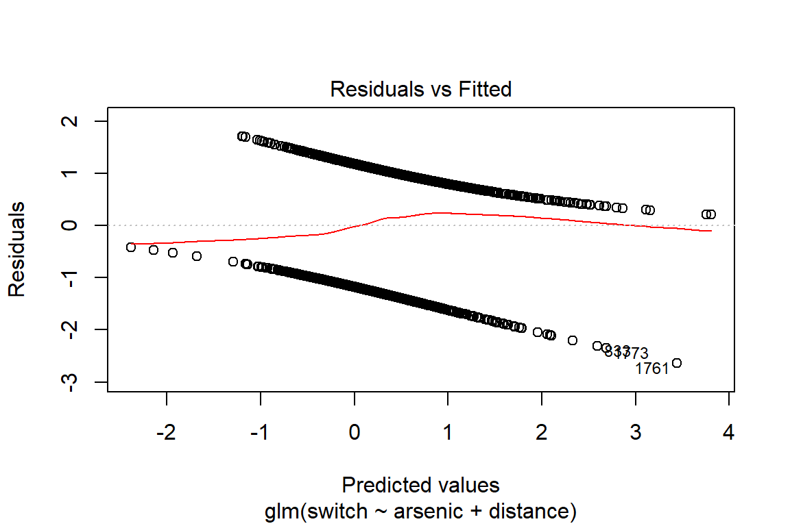
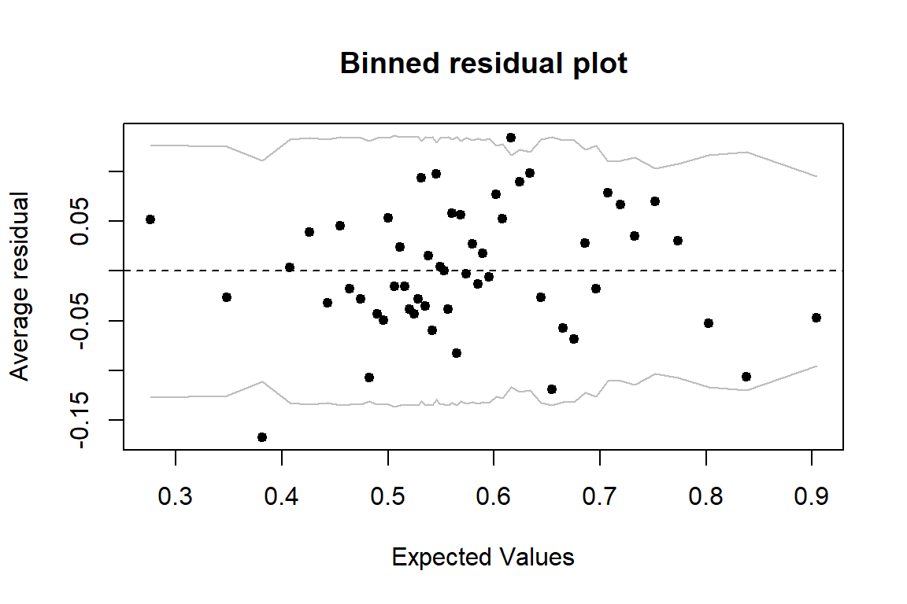
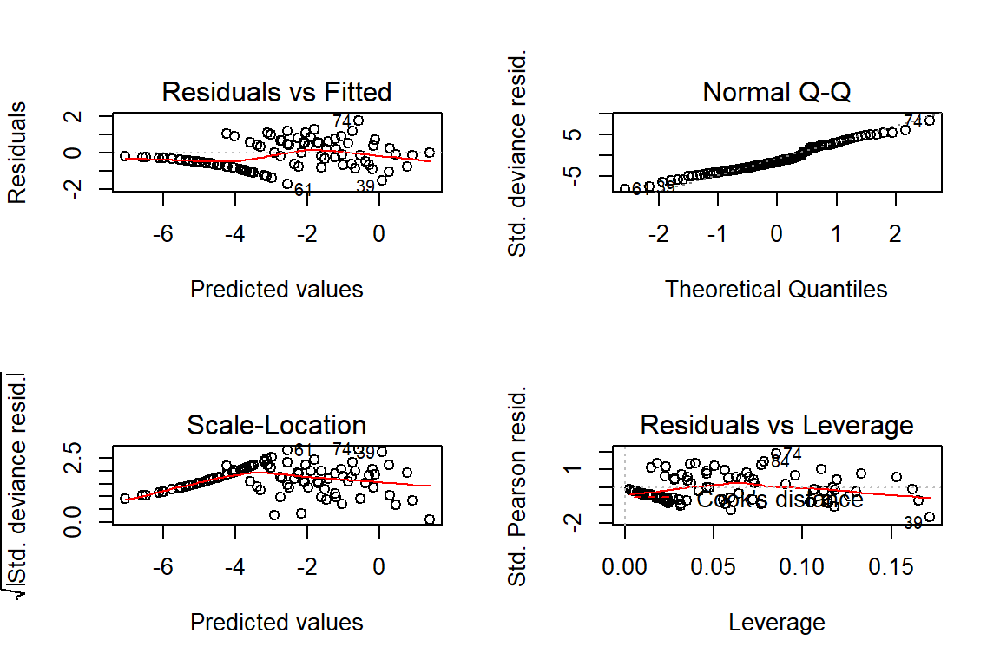

Régression logistique
5 novembre 2018
Objectifs
Connaître les composantes d’un modèle linéaire généralisé.
Utiliser la régression logistique pour modéliser une réponse binaire (+/-), une réponse binomiale (nombre de + et -) ou des proportions.
Interpréter les résultats d’une régression logistique et visualiser les effets des prédicteurs.
Motivation
Les données ne sont pas toujours normalement distribuées.

Motivation
Modèles avec une réponse catégorique binaire (non/oui, 0/1)
survie ou mort d’individus dans un intervalle de temps donné;
présence ou absence d’une espèce sur différents sites;
décision d’un animal de demeurer au même site ou migrer à un autre site.
Motivation
Est-ce qu’on peut modéliser la relation entre la réponse moyenne \(\hat{y}\) et des prédicteurs au moyen d’une régression linéaire?
\[ \hat{y} = \beta_0 + \sum_{i = 1}^m \beta_i x_i \]
Prédictions peuvent être <0 ou >1.
Variance non homogène (\(y\) moins variable si \(\hat{y}\) près de 0 ou 1).
Modèles linéaires généralisés (GLM)
Modèles linéaires généralisés
Extensions de la régression linéaire
différentes distributions de la réponse (pas seulement normale);
différentes transformation des prédictions linéaires.
Composantes d’un modèle linéaire généralisé
Prédicteur linéaire
Fonction de lien entre le prédicteur linéaire et la réponse moyenne
Distribution des réponses individuelles
Composantes d’un modèle linéaire généralisé
Exemple: Régression linéaire
\[ \hat{y} = \beta_0 + \sum_{i = 1}^m \beta_i x_i \]
Prédicteur linéaire: \(\eta = \beta_0 + \sum_{i = 1}^m \beta_i x_i\)
Lien entre la réponse moyenne et la valeur du prédicteur: \(\hat{y} = \eta\)
Distribution des réponses individuelles: \(y \sim N(\hat{y}, \sigma)\).
Types de GLM vus dans ce cours
Régression logistique (une ou plusieurs observations d’une réponse binaire)
Régression de Poisson (données de comptage)
Modèle de régression logistique
Modèle de régression logistique
Dans ce modèle:
la réponse suit une distribution binomiale (codée 0/1) et
la fonction logit permet de relier la probabilité d’un résultat positif (\(y = 1\)) à la valeur du prédicteur linéaire.
Distribution binomiale
- Expérience répétée \(n\) fois, probabilité \(p\) d’un succès et \(1-p\) d’un d’échec.
- Le nombre de succès \(y\) suit une distribution binomiale: \(y \sim B(n, p)\).
- Selon cette distribution, la probabilité d’obtenir \(y\) succès et \(n-y\) échecs correspond à:
\[ \frac{n!}{y!(n-y)!} p^y (1-p)^{n-y} = \binom{n}{y} p^y(1-p)^{n-y}\]
Propriétés de la distribution binomiale
Nombre de succès (\(y\)): moyenne \(np\), variance \(np(1-p)\).
Proportion de succès (\(y/n\)): moyenne \(p\), variance \(p(1-p)/n\)
Dans les deux cas, la variance est maximale si \(p = 0.5\) est tend vers 0 lorsqu’on approche \(p = 0\) et \(p = 1\).
Cas particulier \(n = 1\): distribution de Bernoulli. Moyenne de \(p\) et variance de \(p(1-p)\).
Exemple
Fonctions dans R: rbinom, dbinom, pbinom et qbinom.
Exemple: Probabilité d’obtenir 2 succès sur 5 essais, avec \(p\) = 0.3.
dbinom(2, 5, 0.3)## [1] 0.3087
Lien logit
\[ \eta = \text{logit}(p) = \log \left( \frac{p}{1-p} \right) \]
Inverse du logit: fonction logistique
\[ p = \frac{1}{1 + e^{-\eta}} \]

Propriétés du lien logit
Si \(\eta = 0\), \(p = 0.5\).
La fonction est symétrique autour de ce point central: \(p(-\eta) = 1 - p(\eta)\).
\(p \rightarrow 0\) lorsque \(\eta \rightarrow -\infty\) et \(p \rightarrow 1\) lorsque \(\eta \rightarrow +\infty\).
La pente de la courbe est plus prononcée au centre et plus faible (tendant vers 0) aux extrémités.
Résumé du modèle
Distribution binomiale:
\[ y \sim B(n, p) \]
Lien logit:
\[ \text{logit}(p) = \beta_0 + \sum_{i = 1}^m \beta_i x_i \]
équivalent à
\[ p = \frac{1}{1 + e^{-(\beta_0 + \sum_{i = 1}^m \beta_i x_i)}} \]
Maximum de vraisemblance
L’estimation des coefficients \(\beta\) d’un modèle linéaire généralisé n’est pas basée sur les moindres carrés, mais plutôt sur le maximum de vraisemblance (maximum likelihood).
Les valeurs des coefficients \(\beta\) choisies maximisent la probabilité conjointe de l’ensemble des observations de \(y\).
Interprétation des coefficients
Exemple: \(\text{logit}(p) = -1 + 0.4x\)

Interprétation des coefficients
Exemple: \(\text{logit}(p) = -1 + 0.4x\)

- \(\beta_0\): \(\text{logit}(p)\) si \(x = 0\).
invlogit <- function(x) 1/(1+exp(-x))
invlogit(-1)## [1] 0.2689414Interprétation des coefficients
Exemple: \(\text{logit}(p) = -1 + 0.4x\)

- \(p = 0.5\) si \(-1 + 0.4x = 0\) (donc \(x = 2.5\))
Interprétation des coefficients
Exemple: \(\text{logit}(p) = -1 + 0.4x\)

\(\beta_1/4\) est la pente maximale de \(p\) vs. \(x\).
Si \(x\) augmente de 1, \(p\) augmente au plus de 0.1.
Régression logistique avec R
Régression logistique avec R
Nous verrons des exemples pour trois types de réponse:
une variable binaire codée par des valeurs logiques (FALSE, TRUE), des valeurs numériques (0, 1) ou un facteur (1er niveau = 0, autres niveaux = 1);
une variable binomiale décrite par deux colonnes (nombre de succès, nombre d’échecs);
une variable indiquant une proportion entre 0 et 1.
Exemple 1: Concentrations d’arsenic dans des puits au Bangladesh
Tableau de données
Wellsdu package carData3020 ménages avec un puits à haute concentration en arsenic
Quels facteurs déterminent si un ménage change de puits?
Exemple 1: Concentrations d’arsenic dans des puits au Bangladesh
Réponse: Changer de puits ou non (
switch)Prédicteurs: concentration d’arsenic (en mutiples de 100 \(\mu g/L\)), distance du puits sûr le plus près (en m).
library(carData)
str(Wells)## 'data.frame': 3020 obs. of 5 variables:
## $ switch : Factor w/ 2 levels "no","yes": 2 2 1 2 2 2 2 2 2 2 ...
## $ arsenic : num 2.36 0.71 2.07 1.15 1.1 3.9 2.97 3.24 3.28 2.52 ...
## $ distance : num 16.8 47.3 21 21.5 40.9 ...
## $ education : int 0 0 10 12 14 9 4 10 0 0 ...
## $ association: Factor w/ 2 levels "no","yes": 1 1 1 1 2 2 2 1 2 2 ...Exploration des données
Distribution des prédicteurs potentiels lorsque la réponse est positive ou négative

Fonction glm
Semblable à lm, mais il faut aussi spécifier la distribution de la réponse (family) et la fonction de lien.
mod <- glm(switch ~ arsenic + distance, data = Wells,
family = binomial(link = "logit"))
summary(mod)- Par défaut, la famille binomiale utilise le lien logit.
Résultat
##
## Call:
## glm(formula = switch ~ arsenic + distance, family = binomial(link = "logit"),
## data = Wells)
##
## Deviance Residuals:
## Min 1Q Median 3Q Max
## -2.6351 -1.2139 0.7786 1.0702 1.7085
##
## Coefficients:
## Estimate Std. Error z value Pr(>|z|)
## (Intercept) 0.002749 0.079448 0.035 0.972
## arsenic 0.460775 0.041385 11.134 <2e-16 ***
## distance -0.008966 0.001043 -8.593 <2e-16 ***
## ---
## Signif. codes: 0 '***' 0.001 '**' 0.01 '*' 0.05 '.' 0.1 ' ' 1
##
## (Dispersion parameter for binomial family taken to be 1)
##
## Null deviance: 4118.1 on 3019 degrees of freedom
## Residual deviance: 3930.7 on 3017 degrees of freedom
## AIC: 3936.7
##
## Number of Fisher Scoring iterations: 4Visualiser les prédictions du modèle
- L’effet de chaque prédicteur est non-linéaire et dépend des autres prédicteurs.
- Regardons les prédictions du modèle pour plusieurs combinaisons de concentrations d’arsenic et de distance.
wells_nouv <- expand.grid(arsenic = seq(0.5, 5, 0.5), distance = c(50, 100, 200))expand.gridgénère toutes les combinaisons des valeurs de différentes variables.
Visualiser les prédictions du modèle
wells_nouv$prob_pred <- predict(mod, wells_nouv, type = "response")
Intervalles de confiance sur la probabilité moyenne

Intervalles de confiance sur la probabilité moyenne

prob_pred <- predict(mod, wells_nouv, type = "response", se.fit = TRUE)
wells_nouv$prob_se <- prob_pred$se.fit
ggplot(wells_nouv, aes(x = arsenic, y = prob_pred, color = as.factor(distance),
fill = as.factor(distance))) +
geom_ribbon(aes(ymin = prob_pred - 1.96*prob_se, ymax = prob_pred + 1.96*prob_se),
alpha = 0.3) +
geom_line() +
...Distributions des résidus
Les résidus individuels ne sont pas très utiles pour une réponse binaire.

Graphique de résidus groupés
- Grouper des observations dont les prédictions sont rapprochés et calculer le résidu de la proportion moyenne.
- Fonction
binnedplotdu arm.
library(arm)
binnedplot(fitted(mod), residuals(mod, type = "response"))Graphique de résidus groupés

- Indique aussi un intervalle de prédiction à 95%.
Coefficient de détermination
- Le \(R^2\) basé sur la somme des écarts carrés n’est pas approprié pour les GLM.
- La déviance est une mesure d’écart entre les valeurs attendues et les observations calculée à partir de la vraisemblance \(L\) du modèle.
\[ D = -2 \log L \]
- La déviance est égale au premier terme de l’AIC (sans la pénalité).
- Comme pour l’AIC, la valeur absolue n’est pas interprétable.
Pseudo-\(R^2\)
Deux déviances dans le résultat sommaire de glm
Residual deviance: basé sur la vraisemblance du modèle ajusté.Null deviance: basé sur la vraisemblance du modèle nul (aucun prédicteur).
Ces valeurs sont analogues à la somme des carrés résiduels et totaux. On peut donc définir un “pseudo-\(R^2\)”:
pseudo_R2 <- 1 - mod$deviance/mod$null.deviance
pseudo_R2## [1] 0.04551395\(R^2\) de Tjur
Autre option de \(R^2\), égale à la différence entre la prédiction moyenne pour le groupe d’observations avec \(y = 1\) et celle du groupe \(y = 0\).
\[ {R^2}_{\text{Tjur}} = \bar{\hat{y}}_{(y=1)} - \bar{\hat{y}}_{(y=0)} \]
r2_tjur <- mean(mod$fitted.values[mod$y == 1]) - mean(mod$fitted.values[mod$y == 0])
r2_tjur## [1] 0.06004311Régression logistique binomiale
Régression logistique binomiale
Plusieurs réplicats indépendants d’une réponse binaire pour les mêmes prédicteurs.
Type de données plus fréquent dans un contexte expérimental.
Exemple 2: Mortalité d’escargots en fonction de l’environnement
- Tableau de données
snailsdu package MASS. - Prédicteurs: espèce d’escargot, température, humidité relative, temps d’exposition.
- Réponse: Nombre d’escargots morts sur un nombre initial de 20 pour chaque combinaison des prédicteurs.
library(MASS)
str(snails)## 'data.frame': 96 obs. of 6 variables:
## $ Species : Factor w/ 2 levels "A","B": 1 1 1 1 1 1 1 1 1 1 ...
## $ Exposure: int 1 1 1 1 1 1 1 1 1 1 ...
## $ Rel.Hum : num 60 60 60 65.8 65.8 65.8 70.5 70.5 70.5 75.8 ...
## $ Temp : int 10 15 20 10 15 20 10 15 20 10 ...
## $ Deaths : int 0 0 0 0 0 0 0 0 0 0 ...
## $ N : int 20 20 20 20 20 20 20 20 20 20 ...Exemple 2: Mortalité d’escargots en fonction de l’environnement
Dans ce cas, la réponse a deux colonnes (groupées avec cbind).
mod_snails <- glm(cbind(Deaths, N - Deaths) ~ Species + Exposure + Rel.Hum + Temp,
data = snails, family = binomial)
summary(mod_snails)##
## Call:
## glm(formula = cbind(Deaths, N - Deaths) ~ Species + Exposure +
## Rel.Hum + Temp, family = binomial, data = snails)
##
## Deviance Residuals:
## Min 1Q Median 3Q Max
## -1.7261 -0.7107 -0.3362 0.4231 1.7510
##
## Coefficients:
## Estimate Std. Error z value Pr(>|z|)
## (Intercept) -1.40495 0.97070 -1.447 0.148
## SpeciesB 1.30864 0.16350 8.004 1.20e-15 ***
## Exposure 1.50339 0.10235 14.689 < 2e-16 ***
## Rel.Hum -0.10684 0.01388 -7.699 1.37e-14 ***
## Temp 0.09404 0.01927 4.881 1.06e-06 ***
## ---
## Signif. codes: 0 '***' 0.001 '**' 0.01 '*' 0.05 '.' 0.1 ' ' 1
##
## (Dispersion parameter for binomial family taken to be 1)
##
## Null deviance: 539.72 on 95 degrees of freedom
## Residual deviance: 55.07 on 91 degrees of freedom
## AIC: 223.93
##
## Number of Fisher Scoring iterations: 5Exemple 2: Mortalité d’escargots en fonction de l’environnement

Problème de séparation parfaite
Essayons d’estimer séparément le taux de mortalité pour chaque semaine.
mod_snails2 <- glm(cbind(Deaths, N - Deaths) ~ as.factor(Exposure), data = snails,
family = binomial)
summary(mod_snails2)##
## Call:
## glm(formula = cbind(Deaths, N - Deaths) ~ as.factor(Exposure),
## family = binomial, data = snails)
##
## Deviance Residuals:
## Min 1Q Median 3Q Max
## -2.9350 -1.0881 -0.0002 0.5037 4.1261
##
## Coefficients:
## Estimate Std. Error z value Pr(>|z|)
## (Intercept) -20.75 888.02 -0.023 0.981
## as.factor(Exposure)2 17.25 888.02 0.019 0.985
## as.factor(Exposure)3 19.33 888.02 0.022 0.983
## as.factor(Exposure)4 20.13 888.02 0.023 0.982
##
## (Dispersion parameter for binomial family taken to be 1)
##
## Null deviance: 539.72 on 95 degrees of freedom
## Residual deviance: 182.38 on 92 degrees of freedom
## AIC: 349.24
##
## Number of Fisher Scoring iterations: 17Problème de séparation parfaite
group_by(snails, Exposure) %>%
summarize(mean(Deaths))## # A tibble: 4 x 2
## Exposure `mean(Deaths)`
## <int> <dbl>
## 1 1 0
## 2 2 0.583
## 3 3 3.88
## 4 4 7L’ordonnée à l’origine
(Intercept)correspond à logit(\(p\)) pourExposure= 1, mais il n’y a aucun escargot mort pour ce niveau.Fonction logit n’atteint jamais \(p = 0\). Taux de mortalité trop petit pour être estimé (logit très négatif).
Problème de séparation parfaite
Le coefficient d’une variable qui sépare parfaitement les réponses \(y = 1\) et \(y = 0\) est mal défini, par exemple:
- une catégorie où toutes les réponses sont 0 ou 1;
- une variable numérique \(x\) avec un seuil \(a\) où la réponse est toujours 0 si \(x < a\) et 1 si \(x > a\).
Il existe des méthodes de réduction de biais (ex.: package brglm) qui aident dans ce cas, en pénalisant les coefficients trop élevés.
Régression logistique pour des proportions
Régression logistique pour des proportions
Pour une réponse basée sur un nombre d’individus (ex.: escargots morts ou vivants), la distribution binomiale s’applique directement.
Parfois, la réponse existe seulement sous forme de proportion, par exemple:
- proportion d’un quadrat recouvert par une mousse;
- fraction d’un peuplement brûlée par un feu.
Régression logistique pour des proportions
Le lien logit fonctionne pour transformer un prédicteur linéaire en une proportion entre 0 et 1.
Toutefois, la variance de cette proportion n’est pas connue si elle ne provient pas d’un processus binomial.
Famille quasibinomiale:
- pas une vraie distribution
- estimation des coefficients suit la même formule que la binomiale
- on estime séparément un paramètre de dispersion \(\phi\), pour que la variance des proportions soit égale à \(\phi p (1-p)\).
Régression logistique pour des proportions
Supposons qu’on connaît seulement la proportion d’escargots morts, mais pas le nombre d’individus.
snails <- mutate(snails, prop = Deaths / N)
mod_prop <- glm(prop ~ Species + Exposure + Rel.Hum + Temp,
data = snails, family = quasibinomial)
summary(mod_prop)Régression logistique pour des proportions
- Mêmes coefficients que la régression précédente, mais les erreurs-types ont un peu changé.
##
## Call:
## glm(formula = prop ~ Species + Exposure + Rel.Hum + Temp, family = quasibinomial,
## data = snails)
##
## Deviance Residuals:
## Min 1Q Median 3Q Max
## -0.38597 -0.15892 -0.07517 0.09461 0.39153
##
## Coefficients:
## Estimate Std. Error t value Pr(>|t|)
## (Intercept) -1.404947 0.689052 -2.039 0.0444 *
## SpeciesB 1.308638 0.116058 11.276 < 2e-16 ***
## Exposure 1.503389 0.072652 20.693 < 2e-16 ***
## Rel.Hum -0.106843 0.009851 -10.846 < 2e-16 ***
## Temp 0.094041 0.013677 6.876 7.55e-10 ***
## ---
## Signif. codes: 0 '***' 0.001 '**' 0.01 '*' 0.05 '.' 0.1 ' ' 1
##
## (Dispersion parameter for quasibinomial family taken to be 0.02519503)
##
## Null deviance: 26.9860 on 95 degrees of freedom
## Residual deviance: 2.7535 on 91 degrees of freedom
## AIC: NA
##
## Number of Fisher Scoring iterations: 6Régression logistique pour des proportions
Nous parlerons davantage du paramètre de dispersion au prochain cours.
Une autre option pour la modélisation de proportions est la régression beta (package betareg).
Résumé
Un modèle linéaire généralisé est composé d’un prédicteur linéaire (combinaison linéaire des variables explicatives), d’une fonction de lien pour la réponse moyenne, et d’une distribution statistique de la réponse en fonction de sa moyenne.
La régression logistique sert à modéliser des réponses binaires ou des proportions. Elle utilise un lien logit et une distribution binomiale de la réponse.
La fonction logit transforme une probabilité entre 0 et 1 en un nombre réel entre -\(\infty\) et +\(\infty\). Un logit négatif correspond à une probabilité en-dessous de 0.5, un logit positif correspond à une probabilité au-dessus de 0.5.
Résumé
Dans une régression logistique, l’effet d’un prédicteur sur la réponse est non-linéaire et dépend de la valeur des autres prédicteurs. Il est donc utile de visualiser les prédictions du modèle pour différentes combinaisons des variables.
Pour une réponse binaire (0 ou 1), les résidus individuels donnent peu d’information, mais on peut vérifier l’ajustement du modèle à partir des moyennes de groupes de résidus (binned residuals).